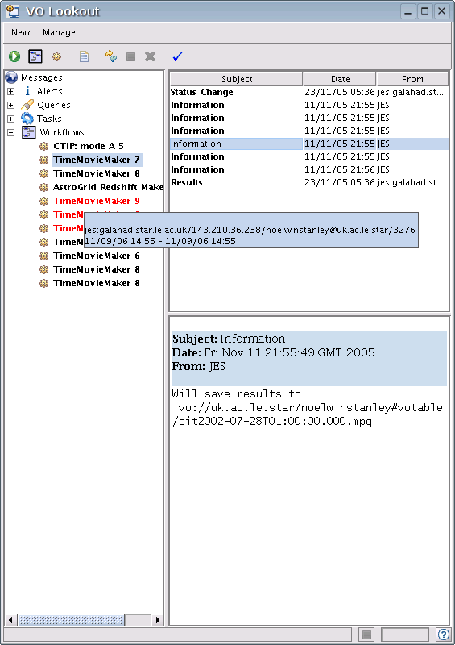

VO Lookout
Summary
VO Lookout is a tool for monitoring and controlling processes - queries, remote tool execution, and workflows. It uses the metaphor of an email program - each process is represented by a separate folder, which contains messages, information, results about this process.
As well as tracking execution progress and accessing results, Lookout can also create, stop and delete processes.
Author: Noel Winstanley, nw@jb.man.ac.uk
Last revised : 23 Nov 2005